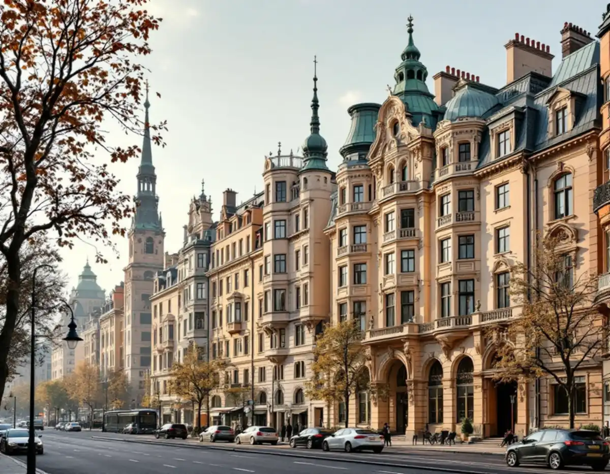
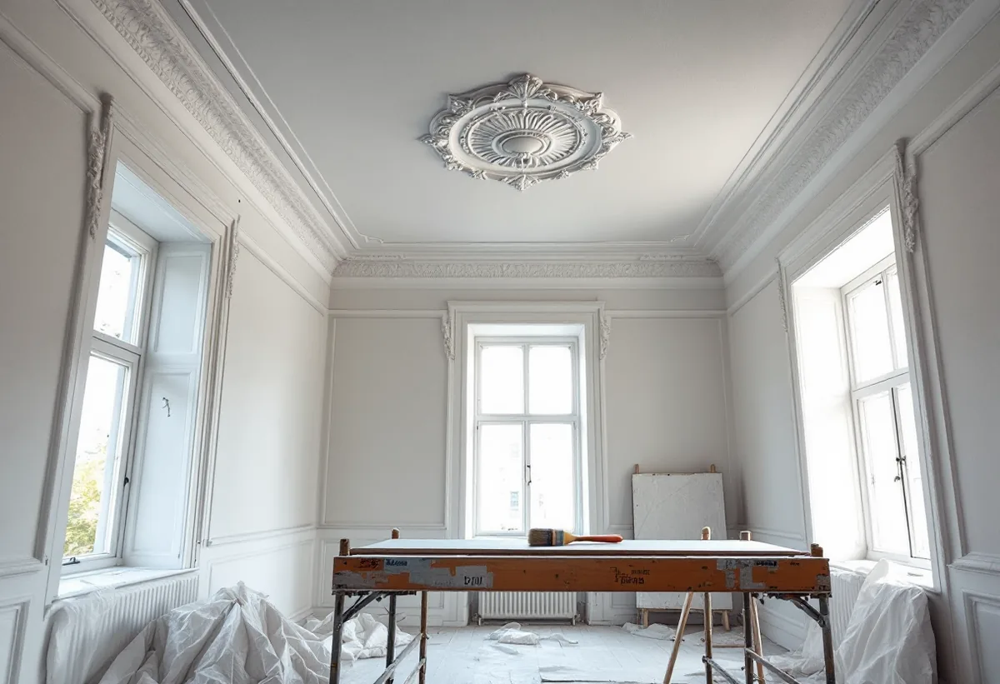

Undersökning
Vi tar reda på om taket är målat med limfärg och om något finns under det översta lagret.
Taken i Östermalms äldre våningar kan vara det svåraste att måla om, eftersom den gamla färgen där uppe inte tål samma behandling som en vanlig vägg. Geal Entreprenad AB målar tak, väggar och snickerier på Östermalm och tar reda på vad taket är målat med innan vi föreslår hur det ska behandlas.

Stadens översiktsplan beskriver stenstadens stora bebyggelsemassa på Norrmalm och Östermalm som uppförd till största delen under 1800-talets senare del, och som den största samlade årsringen i stadsväven. Husen är normalt fem våningar höga, står vid 18 meter breda gator och har dekorerade fasader i puts eller natursten. Husen byggdes alltså långt innan latexfärgen kom till Sverige på 1950-talet.
Stadens områdesfakta för 2025 räknar 7 290 bostäder i flerbostadshus i stadsdelen Hedvig Eleonora, varav 5 151 bostadsrätter och drygt 2 100 hyresrätter. För de flesta som vill måla om är det alltså stadgarna i en bostadsrättsförening som anger vad som är medlemmens sak. Den som hyr behöver först fråga fastighetsägaren.

Riksantikvarieämbetet skriver att limfärg var vanlig som takfärg ända fram till 1950-talet. Den består av krita, vatten och lim, ger en jämn, matt yta med fin lyster och torkar snabbt. Färgen är känslig för fukt och har en tendens att krita av sig, vilket gör den olämplig i kök och badrum och på ytor som nöts. Handboken skiljer mellan limfärg som tidigare har målats över och sådan som inte har det, eftersom behandlingen blir olika.
En lätt skadad limfärgsyta som inte har målats över kan enligt handboken målas om utan att limfärgen tas bort. Det gamla skiktet binds då till underlaget med en grundfärg av ljus oljefärg spädd med lacknafta till grundfärgskonsistens, ibland med lite flytande såpa i, vilket kallas patentering. Är skiktet tjockt, sprucket och flagnande tvättas limfärgen i stället ner med vatten och träspackel innan underlaget lagas. Handboken kallar det ett mycket slaskigt arbete, så golvet täcks noga och limfärg som inte ska åtgärdas skyddas mot stänk.
Fläckar efter gamla vattenskador eller rost måste enligt handboken isoleras särskilt före målning, och ibland räcker inte en patentering. Under förutsättning att fläckarna är väl uttorkade kan de isoleras med utspädd cellulosalack eller ljus schellack. Ibland döljer sig något mer under det vita. Om det finns äldre dekormåleri under en täckmålad limfärg skulle en grundfärg förstöra det, och då kan en såpning vara lämpligare än patentering.
Statens fastighetsverk beskriver hur 1800-talets målare använde tekniker som schablonmålning, stänkmålning, ådring och marmorering, och limfärg har enligt Riksantikvarieämbetet varit den huvudsakliga färgen för stänk- och schablonmåleri. När taket ska strykas på nytt med limfärg görs det i en enda strykning, snabbt och med långa penseldrag i smala fack. På större tak bör man enligt handboken vara fler än en målare, så att färgen hinner läggas på innan angränsande ytor har torkat.
Stockholms stad skriver att alla ändringar ska göras varsamt och att en byggnad som är särskilt kulturhistoriskt värdefull inte får förvanskas, oavsett om åtgärden kräver lov eller inte. Vissa detaljplaner har bestämmelser om utökad lovplikt, och då kan lov krävas även för underhållsåtgärder. Inför arbetet kan en antikvarisk förundersökning och en konsekvensbeskrivning behövas, och ibland ska en sakkunnig inom kulturvärden vara med.
Riksantikvarieämbetet råder att samråda med länsmuseet när ett hus har högt kulturhistoriskt värde och att notera om interiörmåleriet kräver särskilda hänsyn. Vi börjar därför med detaljplanen och föreningens kännedom om huset innan taket rörs. Mer om golven i samma våningar finns under golvslipning på Östermalm och om badrummet under badrumsrenovering på Östermalm. Målning i stort beskrivs på sidan om målare.
Vi tar reda på om taket är målat med limfärg och om något finns under det översta lagret.
Vi kontrollerar om lov krävs och vad föreningen vet om husets interiörer.
Patentering, nedtvättning och isolering av fläckar står som egna poster.
Golv, väggar och lister täcks innan något vatten kommer i närheten av taket.
Taket patenteras eller tvättas ner och stryks sedan i ett svep.
Vi tittar på taket i både dagsljus och lampljus tillsammans med dig.
Skatteverket räknar målning av tak, väggar och golv i en bostadsrätt till rotarbete, liksom målning av dörrar och element, när arbetet sker innanför bostadens tak, väggar och golv och ligger på dig enligt stadgarna. För en hyrd lägenhet ges inget avdrag, och inte heller för föreningens trapphus.
Du får 30 procent av arbetskostnaden i avdrag, högst 50 000 kr per person och år och högst 75 000 kr tillsammans med rutavdraget. Färgen, materialet och resorna är inte avdragsgilla. Vi gör avdraget direkt på fakturan.
Takhöjden och takets yta, om limfärgen kan patenteras eller måste tvättas ner, hur många fläckar som ska isoleras, om dekor ska skyddas och hur mycket som behöver täckas påverkar priset mest. Efter ett kostnadsfritt besök får du ett skriftligt kostnadsförslag.
Fasad, fönster och invändig målning.
Målare i Stockholm →Kulturvärden, förvanskningsförbud och klassning.
Badrumsrenovering på Östermalm →Mönsterparkett, lack och olja.
Golvläggare på Östermalm →Slipa om eller underhålla lackade golv.
Golvslipning på Östermalm →